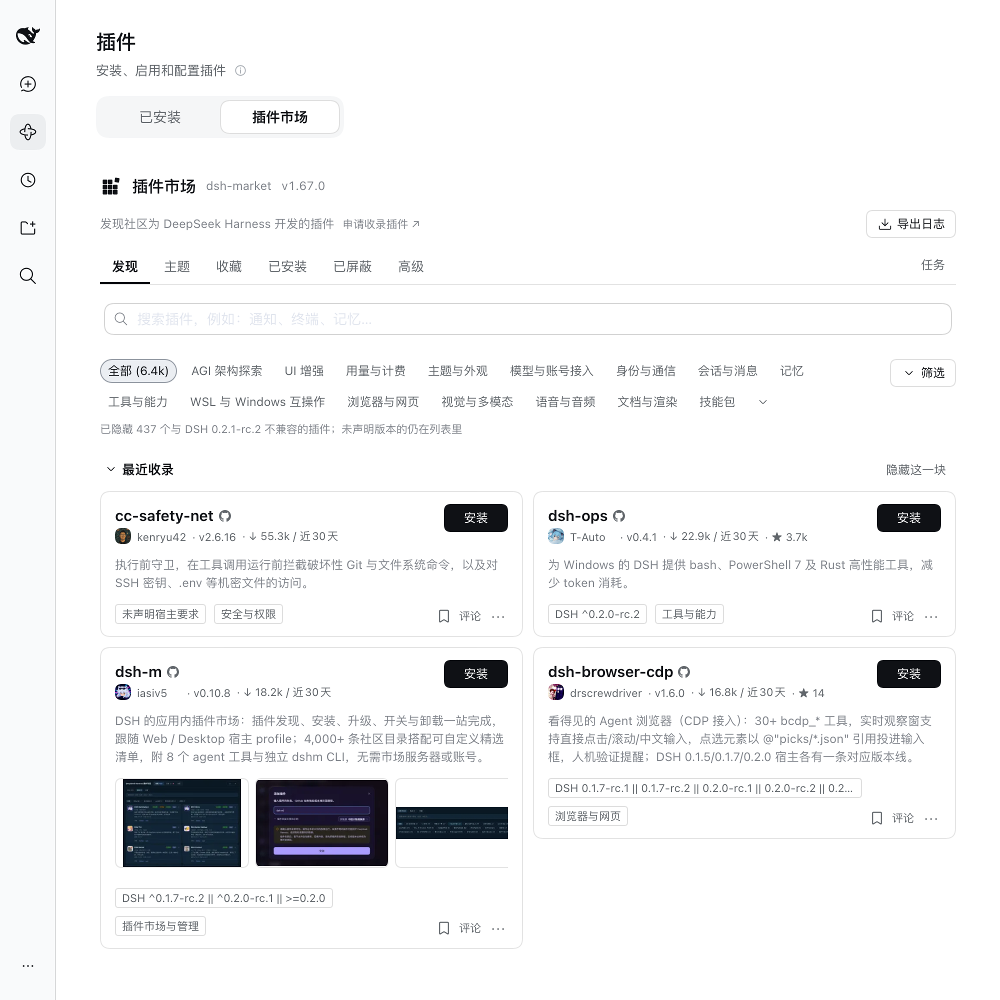

浏览 __COUNT__ 个插件
安装插件
GitHub
npm
English
浏览 __COUNT__ 个插件
安装插件
GitHub
npm
English
DeepSeek Harness 插件市场
dsh-market 就是装在 DeepSeek Harness（简称 dsh）里的插件市场：__COUNT__ 个社区插件，逛一逛，点一下，装好——多数插件连重启都不用。更新、卸载、实时安装进度，零遥测。
dsh plugin --profile web add dshmarketdsh web → 插件 → 插件市场 页签（dsh 0.2.1 起；更早的宿主在 设置 → 插件市场），就这么多。装别的插件？安装步骤、更新卸载和装不上时怎么办。
这份目录同时是一份插件市场索引。dsh 0.2.1 起，打开 插件 → 发现（Discover）→ 索引源（Index sources），添加
https://cdn.jsdelivr.net/npm/dsh-plugin-catalog/index.json——它就是这份列表的 format 1 索引，放在 npm 上分发，所以在哪里都快
（GitHub Pages 上的 awesome-dsh-plugin.com/index.json 和 dshmarket.com/index.json 是同一份文档）。官方发现页和
plugin_market 智能体工具就能搜索同一批插件。
dsh-market 是什么

一站逛全
awesome-dsh-plugin 精选目录全量收录——分类、star 数、最热/最新排序、中英双语描述。
装得快
发过 npm 的插件优先走 npm 包而非整仓 GitHub 下载,通常秒级装好。
基本免重启
多数插件刷新页面即刻生效;更新、卸载同样一键,市场连自己都能这样升级。
零术语
缺组件?市场自己发现、一键装好。你全程见不到终端。
有护栏
只允许安装精选列表内的来源,构建脚本默认禁止执行,终端类插件装错位置前会被提醒。
默认隐私
市场不向任何地方上报数据;连反馈用的日志导出都已脱敏,且只存在你机器上。
常见问题
插件是做什么的？
给 dsh 加功能的扩展：换个界面、接一个模型、多一个工具、让手机也能用。装错了随时卸掉。
怎么装插件？
先装上这个市场（上面那行命令），之后在市场里点「安装」。想从命令行装、或者装不上，看安装说明。
插件要花钱吗？
市场和列表本身免费、开源（MIT）。插件由各自作者发布，收不收费看插件自己的说明。
装完要重启 dsh 吗？
多数插件刷新页面就生效，少数需要重启一次 dsh web。装完在「设置 → 插件」里能看到，就说明装上了。